Mi jut eszedbe, ha meghallod a szappan szót? Egy forró fürdő és a jobbnál jobb illatok, igaz? Tudtad, hogy a szappanok, amiket a boltban veszel tele vannak vegyszerekkel, hogy jobban habosítsanak és jobb illatuk legyen? Ezzel csak az a gond, hogy a vegyszer beivódik a bőrön keresztül a szervezetbe, ami hosszútávon káros hatásokkal járhat.

Itt a megoldás: készíts saját szappant! Itt igazán elengedheted a fantáziád, és olyan állagú, formájú, mintájú és illatú szappant készíthetsz, amilyet csak szeretnél!
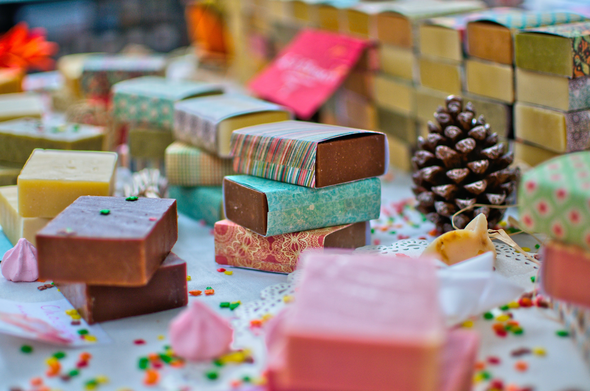Háziszappan készítése házilag
A házikészítésű szappanok titkai:
Az illata: a házi készítésű szappanok egyik jellegzetessége, hogy parfüm nélkül készülnek. Fontosak a természetes alapanyagok, ezért az illatát különböző gyógynövényekből készült illóolajok adják. Persze ha szeretnél, illatmentes szappant is készíthetsz, ez főleg a gyerekek szempontjából ideális.
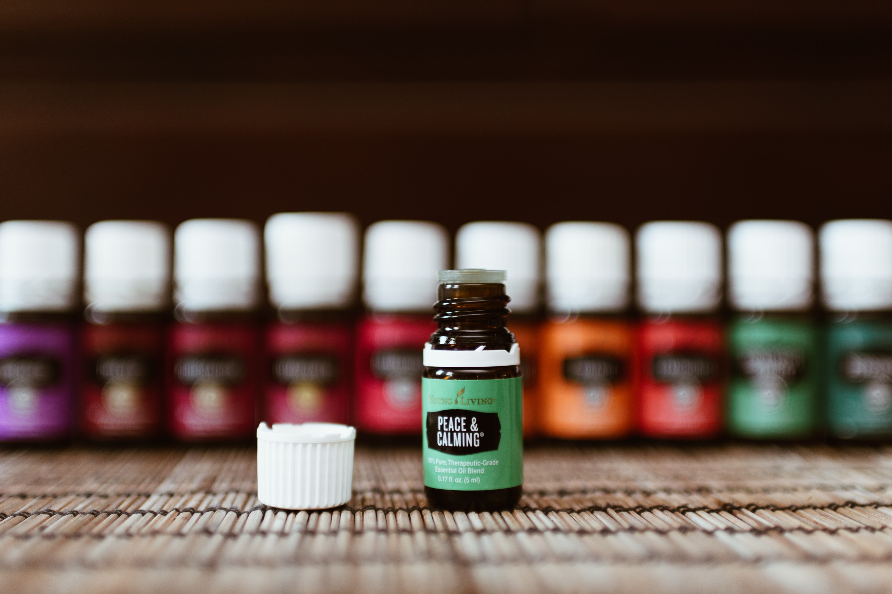Ha mégis az illatos szappan mellett döntenél, próbáld ki ezeket: narancsvirág, levendula, eper, citromfű, jázmin, rózsa, zsálya, körömvirág. Válogass bátran, hiszen mindenki olyan illatot választ magának, amire a lelkének szüksége van. Az aromaterápia segít ellazulni, hat az érzelmeidre és a hangulatodra is.
A színe: biztos sokszor láttál már levendulaszappant, aminek lila színe volt. Ezt a színt azonban csak mesterségesen lehet előállítani, ezzel csupán a szappan eladhatóságát növelik. Ha színezni szeretnéd a szappant, akkor a következők közül válassz: kurkuma fűszer, kakaó, fahéj, céklapor, csalánpor, alga, rózsaszín vagy zöld agyag, illetve az előbb említett illóolajok is enyhén színezik a szappant.
Ha kecsketejes szappant készítesz színezés nélkül, ne lepődj meg, ha nem lesz hófehér! Ennél sokkal természetesebb színt kapsz végeredményül. Persze különböző praktikákkal a hófehér színt is el tudod érni, na de minek? Hiszen ez a szín is nagyon hívogató.
Ne feledd - az igazi háziszappan alapanyagaiban is a minőséget és a természetességet kell, hogy tükrözze. Ezért figyelj oda a részletekre is. Például az olaj esetében: hidrogénezett olaj helyett hidegen sajtolt változatot használj!

Előkészületek:
A lúg () egy veszélyes anyag, ezért fontos, hogy azokat az eszközöket, amiket a szappankészítéshez használsz, nem használhatod később sütéshez, főzéshez. A szappan elkészítéséhez nincs szükség sok, drága eszközre. Elég csupán egy nagy edény, közepes lábos, hőmérő, (bot)mixer, mérleg, kanál, fakanál, szilikonformák.
A szappan szinte bármilyen formájú lehet, hiszen rengeteg szilikonformát találtsz már a boltokban. Ha ajándéknak készül, akkor válassz szezonális formát, ezek biztosan nagy sikert aratnak (virágok, szívecske, levél, mézeskalács).


Vajak, zsírok, olajok
Először is mérd ki a vajakat, zsírokat, olajokat a recept szerint.

- ☛ 250 g kókuszvaj ☚
- ☛ 250 g pálmaolaj ☚
- ☛ 250 g napraforgó olaj ☚
- ☛ 250 g oliva olaj ☚
Tedd egy lábosba őket és hevítsd 40 celsius fokra! Miközben a zsírok melegednek, elkezdheted a következő lépést, de vigyázz arra, nehogy túlhevítsd, mert akkor sokat kell várni, mire kihűl.
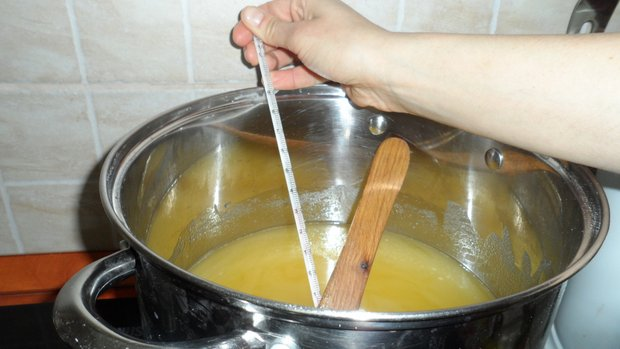Fagyasztott tej
👌🏼Tipp👌🏼 : Ha tejjel készíted a szappant, akkor fagyaszd le, mielőtt dolgoznál vele. Ennek az az egyszerű magyarázata, hogy a tejhez hozzá kell adni a lúgot, ami kémiai hatásba lép vele, és önmagát hevíti. Ha nem fagyasztott tejjel csináljálod, akkor a tej felforrhat és kifuthat.
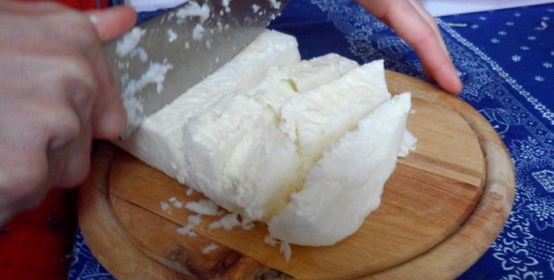Vágd fel a fagyasztott tejet és tedd egy edénybe. Ezután óvatosan, kesztyűben mérd ki a lúgot. Fontos, hogy vegyél fel védőfelszerelést (kesztyű, maszk, szemüveg), mert ha a lúg kifröccsen, égési sérülést okozhat.
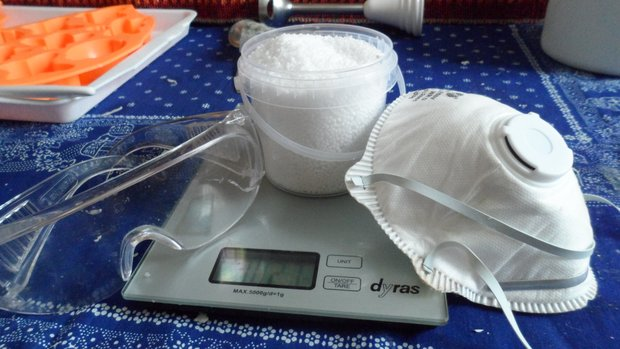Ha felvetted a védőfelszerelést, akkor hozzáadhatod a tejhez a lúgot (ha van rá mód, csináld a teraszon, friss levegőn). Nem kell mást tenned, mint kevergetni. Ha a tej már teljesen elolvadt benne, akkor kész vagy ezzel a lépéssel is.
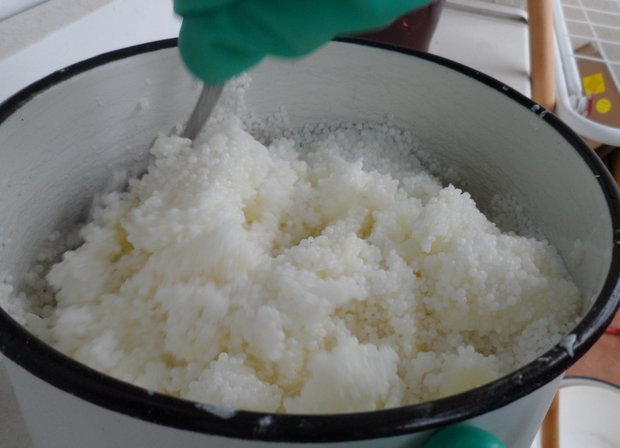 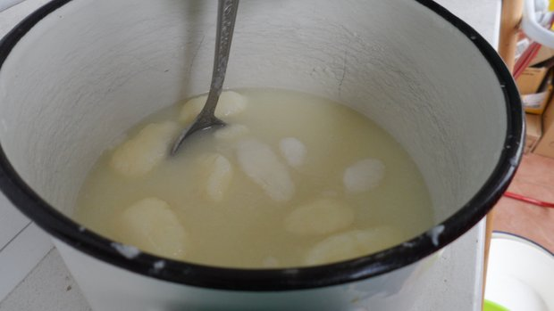Szűrés
Most óvatosan öntsd bele a tejes-lúgos folyadékot a 40 celsius fokos zsírral, olajjal teli lábosba. Fontos, hogy szűrőt is használd.
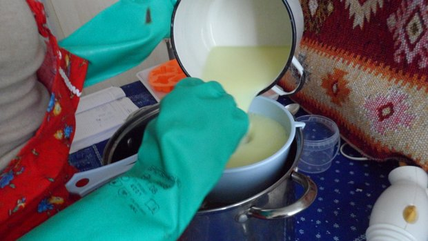Ezután egy mixer segítségével keverd össze a masszát, amíg nem kezd el szappanosodni, mint ahogy a képen is látható. Ha illatos szappant szeretnél, akkor az illóolajat is ekkor kell belekeverned a masszába!
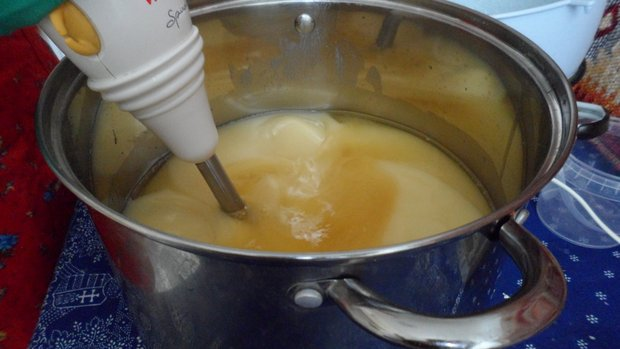 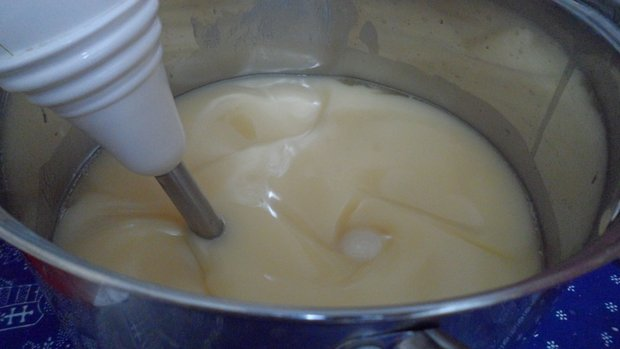👌🏼Tipp👌🏼: Ha többszínű szappant szeretnél készíteni, akkor vegyél külön egy kis tálba masszát, és színezd kedved szerint a már említett természetes színezőanyagokkal.
Formába öntés
Ezután már csak 1 lépés van hátra, a formába öntés. Figyelj arra, hogy mindegyik formába ugyanannyi masszát önts, és ne felejtsd el azt sem, hogy a kesztyűnek még mindig rajtad kell lennie!
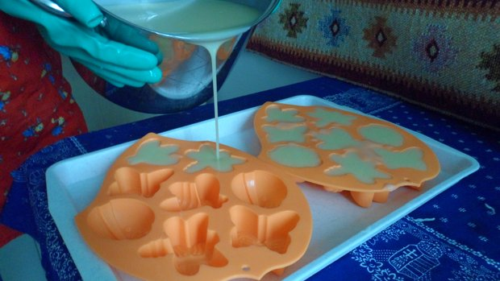Ha kész vagy, teddk őket olyan helyre, ahol biztonságban vannak. Ha hideg helyen tárolod őket (kamrában), ne felejtsd el letakarni, mert fontos, hogy melegen legyenek, hogy megzselésedjenek. Másnap ki is veheted a szappanokat a formából. Tedd őket kartondobozba, ahol jól tudnak szellőzni, hiszen a lúgnak ki kell párolognia belőlük. Most már nincs más dolgod, mint várni. 4 hét múlva csomagolhatod is a házi készítésű ajándékokat.
Nem is gondolnád mi mindenre használható a háziszappan! 15+1 káprázatos tippet mutatok!
A háziszappan univerzális, használhatjuk mosáshoz és más kevésbé ismert dolgokhoz is. A háziszappan enyhíti a bőrgyulladás okozta panaszokat, a bőrgomba tüneteit és még a takarításhoz is használhatjuk. A boltok polcain számos kémiai anyaggal dúsított szappant találhatunk, de egyes helyeken a háziszappan is megtalálható.
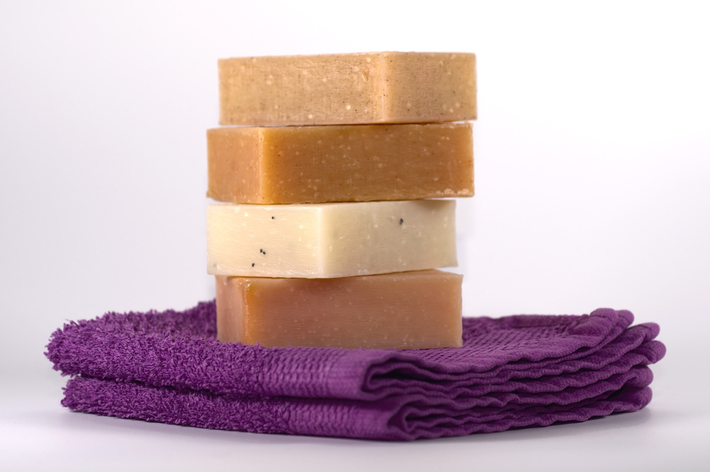Nagymamáink idejében a háziszappan sok más terméket helyettesített. Most lássuk miért ilyen különleges a háziszappan? A háziszappannak rengeteg jó tulajdonsága van, ezért érdemes ezt használni a kémiai alapanyagokkal dúsított szappanok helyett. Az egyik nagy előnye, hogy természetes alapanyagokból készül, növényi olajokból és állati zsírokból, amelyek nem károsak az emberi szervezetre. A háziszappan használatával még a ruhákat is kimoshatjuk.
Mire használjuk:
1. A háziszappan elengedhetetlen a kerti dolgok tisztításához. A szappanos vízzel minden kerti bútort, szerszámot megtisztíthatunk. A lakásban is remekül használhatjuk, kevés szappant reszeljünk forró vízbe és már takaríthatunk is vele.
2. Jó hatással van a kötött dolgokra, ha gyapjúból készült pulóvert mosunk vele, a pulóver puhább lesz.
3. Nagyon hatásos a korpás haj esetében, a haj sűrűbb és egészségesebb lesz, ha ezzel mossuk.
4. A hosszú és egészséges haj titka: először mossuk meg samponnal, majd háziszappannal a hajunkat, az eredmény nem marad el, selymesebb lesz tőle a hajunk.
5. Gyulladások kezelésére is használják. A gyulladt bőrfelületet ezzel mossák meg.
6. Nőgyógyászati problémák enyhítésére is alkalmas, ha ezzel mosakszunk.
7. A háziszappan fertőtlenítő hatású, ezért vetekszik a fertőtlenítő szappanokkal, kézmosásra is alkalmas.
8. Mossuk meg az arcunkat kétszer egy héten háziszappannal, hogy a bőrünk fiatal maradjon és utána pedig kenjük be hidratálókrémmel. Néhány használat után már látszik az eredmény.
9. A lábgomba kezelésére is alkalmas, mossunk minden nap lábat háziszappannal.
10. Epilálás után kenjük be a bepirosodott bőrt háziszappannal.
11. Szájüreg fertőzés esetén, a fogkefét tegyük egy éjszakára szappanos vízbe, reggelre fertőtlenítve lesz.
12. A ruhákat is tisztíthatjuk vele, mivel antibakteriális hatású.
13. A háziszappan a begyulladt bőrt is remekül kezeli. Tegyünk szappanos vizes borogatást a problémás helyre többször egy nap.
14. Nagyon jól kezelhetőek a pattanások háziszappannal. Reszeljünk le egy kevés szappant és keverjük össze vízzel, amíg habos nem lesz, majd keverjük össze 1 kiskanál sóval. Ezt a keveréket kenjük a pattanásra. Olyan érzés mintha szurkálnák az arcunkat. Hagyjuk 30 percig az arcunkon, majd öblítsük le forró, utána pedig hideg vízzel. Három hétig folytassuk ezt a kezelést hetente 2 – 3 alkalommal.
15. Kéthetente legalább egyszer érdemes az egész testünket háziszappannal megmosni, mert megvéd a vírusoktól és a baktériumoktól.
+1. A repedezett sarkakat is puhábbá teszi, 2 liter forró vízhez tegyünk egy kiskanál szódabikarbónát és 1 evőkanál reszelt háziszappant, ebbe áztassuk a lábunkat.
Számtalan jótékony hatása van a háziszappannak, érdemes gyakran használni.
Várom a visszajelzéseket!
Remélem tetszett ez a rövid kis bemutató a háziszappanoról. Próbáltam picit érdekesebbé tenni pár képpel.